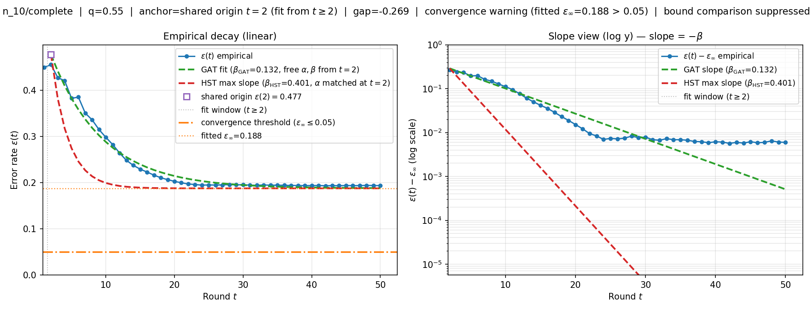

n=10 · q=0.55 · complete
Empirical error rate ε(t) on held-out test episodes for this checkpoint. GAT and HST curves share α and ε∞ at t=2; fits use rounds t≥2 (after gossip has mixed into the GAT input).
